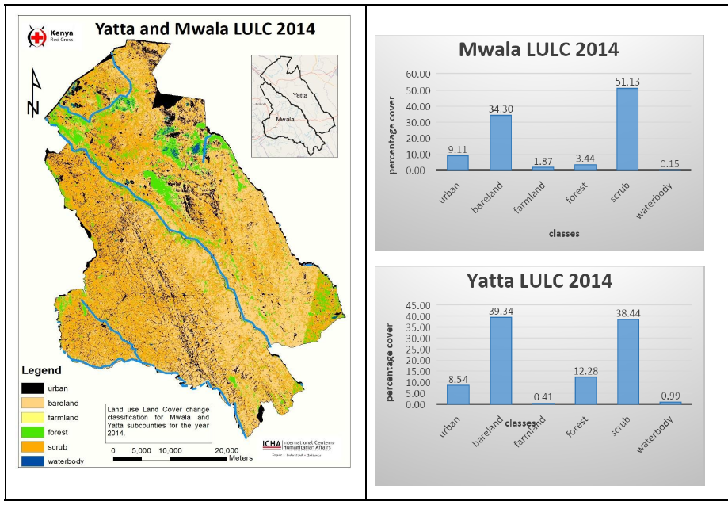
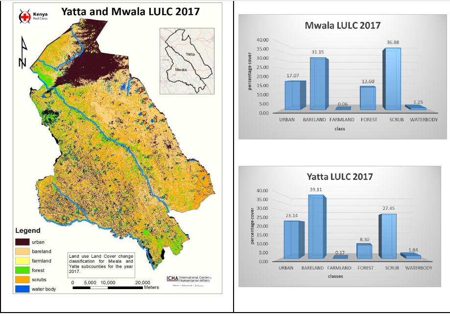
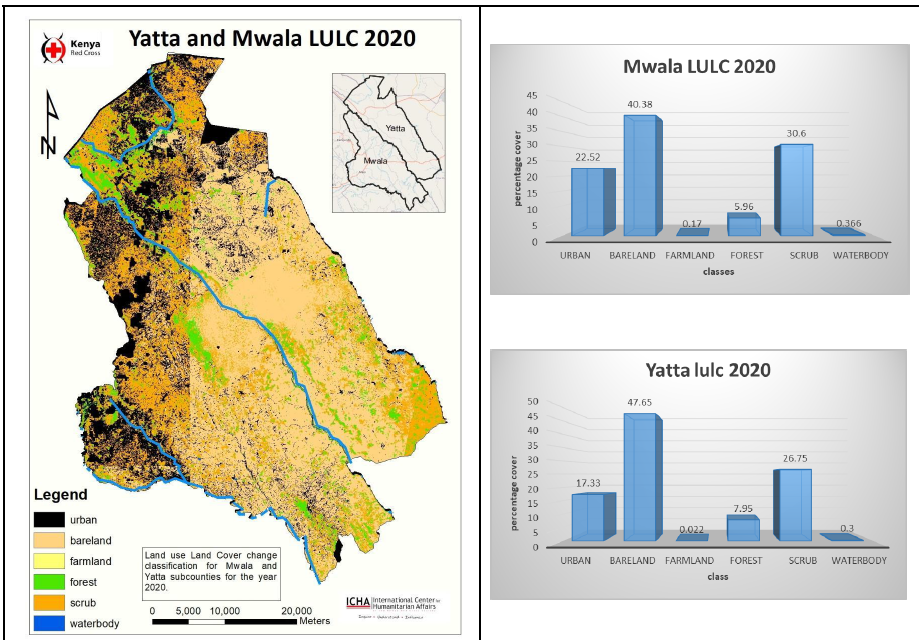
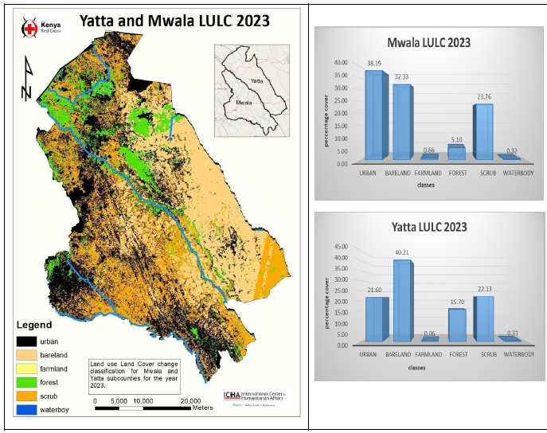

A Comprehensive Study of Land Use and Land Cover (LULC) Classification in Yatta and Mwala Sub Counties from 2011 to 2023 Using Landsat 7 and 8 TOA Imagery in GEE
Summary
This report presents an analysis of Land Use and Land Cover (LULC) classification in Yatta and Mwala Sub Counties through the years 2011 to 2023, leveraging Landsat 7 and Landsat 8 Tier-1 Top of Atmosphere (TOA) imagery processed using Google Earth Engine (GEE). The study aims to provide insights into the dynamics of land cover changes over time. In 2011, bareland emerges as the predominant land cover type, holding the largest percentage in the area. This trend persists through 2014 and 2017, indicating a consistent pattern of land use characterized by extensive areas of barren or sparsely vegetated land. However, a notable shift occurs in 2023, where a decrease in bareland coverage is observed alongside a notable surge in population.
Objectives
To analyze the LULC changes in Yatta and Mwala Sub Counties for 2023, 2020, 2017, 2014 and 2011.
To identify the drivers of LULC changes, e.g. urban expansion in Yatta and Mwala sub-counties.
Methods
Data Acquisition: Retrieval of Landsat 7 and Landsat 8 TOA imagery covering the study period from the Google Earth Engine data archive.
Data Pre-Processing: Correction for atmospheric effects, cloud masking, and radiometric calibration to ensure the quality and consistency of the satellite data.
Image Classification: Implementation of supervised classification algorithms, such as Random Forest or Support Vector Machine, to classify land cover types based on spectral signatures derived from the Landsat imagery.
Accuracy Assessment: Conducting error matrix analysis to evaluate the accuracy of the LULC classification results.
Results
In 2011, bareland emerges as the predominant land cover type, holding the largest percentage in the area. This trend persists through 2014 and 2017, indicating a consistent pattern of land use characterized by extensive areas of barren or sparsely vegetated land. However, a notable shift occurs in 2023, where a decrease in bareland coverage is observed alongside a notable surge in population. This phenomenon can be attributed to several factors, among them being the rapid growth of urbanization in the region. As populations expand, there is an increased demand for residential, commercial, and industrial spaces, leading to the conversion of previously barren land into urban areas. This transformation is often accompanied by infrastructure development, such as roads, housing estates, and commercial centers, further altering the land cover composition. The semi-arid climate of Yatta and Mwala Sub Counties plays a significant role in shaping land use patterns. With seasonal rainfall patterns and limited water resources, agricultural activities may be constrained, leading to a higher prevalence of bareland. However, as urbanization accelerates, the demand for arable land diminishes, resulting in the conversion of bareland to urban or built-up areas. Overall, the observed trend reflects the dynamic interplay between human activities, environmental factors, and socio-economic dynamics in shaping land use and land cover patterns in Yatta and Mwala Sub Counties. As urbanization continues to progress, understanding these dynamics becomes increasingly crucial for effective land management, resource allocation, and sustainable development planning in the region.
Figure 1: LULC Pattern with Bar Distribution Graph of Yatta and Mwala in 2011

Figure 2: LULC Pattern with Bar Distribution Graph of Yatta and Mwala in 2014
Figure 3: LULC Pattern with Bar Distribution Graph of Yatta and Mwala in 2017
Figure 4: LULC Pattern with Bar Distribution Graph of Yatta and Mwala in 2020
Figure 5: LULC Pattern with Bar Distribution Graph of Yatta and Mwala in 2023
Tables
Table 1: Combined Area Distribution of Land Usage for 2011
| Class | Count | Coefficient | Area (km²) | Percentage Cover |
|---|---|---|---|---|
| Urban | 237972 | 0.10233523 | 115.17 | 10.23% |
| Bareland | 1093577 | 0.47027155 | 529.27 | 47.03% |
| Farmland | 6352 | 0.00273155 | 3.07 | 0.27% |
| Forest | 109752 | 0.04719671 | 53.12 | 4.72% |
| Scrub | 843434 | 0.36270241 | 408.20 | 36.27% |
| Waterbody | 34329 | 0.01476252 | 16.61 | 1.48% |
Table 2: Combined Area Distribution of Land Usage for 2014
| Class | Count | Coefficient | Area (km²) | Percentage Cover |
|---|---|---|---|---|
| Urban | 205020 | 0.08816487 | 99.23 | 8.82% |
| Bareland | 857345 | 0.368684571 | 414.94 | 36.87% |
| Farmland | 26221 | 0.011275832 | 12.69 | 1.13% |
| Forest | 184849 | 0.079490723 | 89.46 | 7.95% |
| Scrub | 1038501 | 0.446587191 | 502.61 | 44.66% |
| Waterbody | 13480 | 0.005796812 | 6.52 | 0.58% |
Table 3: Combined Area Distribution of Land Usage for 2017
| Class | Count | Coefficient | Area (km²) | Percentage Cover |
|---|---|---|---|---|
| Urban | 468868 | 0.20162758 | 226.92 | 20.16% |
| Bareland | 818742 | 0.3520841 | 396.25 | 35.21% |
| Farmland | 2613 | 0.00112367 | 1.26 | 0.11% |
| Forest | 253367 | 0.108955559 | 122.62 | 10.90% |
| Scrub | 745779 | 0.320707779 | 360.94 | 32.07% |
| Waterbody | 36047 | 0.015501511 | 17.46 | 1.55% |
Table 4: Combined Area Distribution of Land Usage for 2020
| Class | Count | Coefficient | Area (km²) | Percentage Cover |
|---|---|---|---|---|
| Urban | 607310 | 0.261145538 | 293.80 | 26.11% |
| Bareland | 603818 | 0.259538184 | 292.26 | 25.95% |
| Farmland | 1739 | 0.000748238 | 0.84 | 0.07% |
| Forest | 162093 | 0.069707367 | 78.42 | 6.97% |
| Scrub | 902904 | 0.38814376 | 436.98 | 38.81% |
| Waterbody | 24947 | 0.010721233 | 12.07 | 1.07% |
Table 5: Combined Area Distribution of Land Usage for 2023
| Class | Count | Coefficient | Area (km²) | Percentage Cover |
|---|---|---|---|---|
| Urban | 672442 | 0.289020392 | 325.17 | 28.90% |
| Bareland | 590406 | 0.253621832 | 285.36 | 25.36% |
| Farmland | 3859 | 0.001658291 | 1.87 | 0.16% |
| Forest | 111741 | 0.048015946 | 54.00 | 4.80% |
| Scrub | 933502 | 0.40085733 | 450.97 | 40.09% |
| Waterbody | 16823 | 0.007219856 | 8.12 | 0.72% |